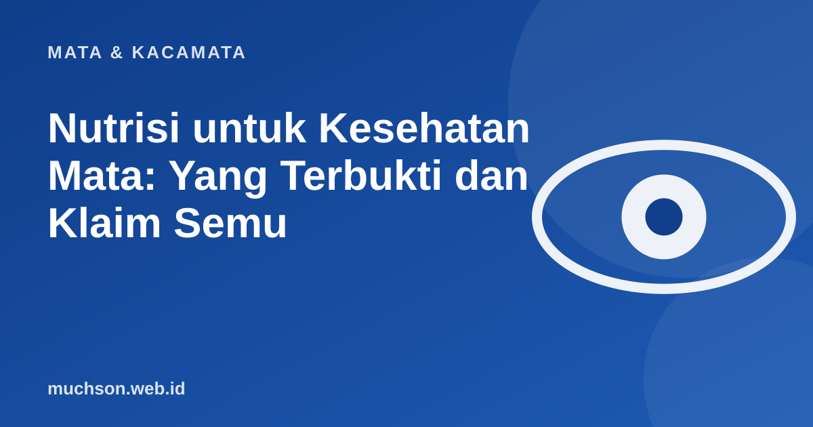

Beranda › Artikel › Mata & Kacamata
Mata & KacamataNutrisi untuk Kesehatan Mata: Yang Terbukti dan Klaim Semu
Iklan suplemen mata menjanjikan penglihatan lebih tajam. Pada kenyataannya, pola makan seimbang berperan, tetapi tidak ada satu makanan yang menyembuhkan minus. Berikut yang punya dasar yang cukup dan cara membedakan klaim yang berlebihan.

Zat gizi yang memang penting
| Zat gizi | Peran bagi mata | Sumber makanan |
|---|---|---|
| Vitamin A | Penting untuk penglihatan dalam gelap dan permukaan mata; kekurangan dapat menyebabkan rabun senja | Hati, telur, susu, sayur dan buah berwarna oranye hijau tua |
| Lutein dan zeaxanthin | Pigmen yang terkumpul di retina bagian tengah | Bayam, kangkung, brokoli, jagung, telur |
| Omega-3 | Dikaitkan dengan kesehatan permukaan mata; hasil penelitian untuk mata kering beragam | Ikan berlemak seperti salmon, sarden, kembung |
| Vitamin C dan E, seng | Antioksidan dan pendukung kesehatan retina | Buah jeruk, kacang-kacangan, daging, biji-bijian |
Mitos dan klaim yang perlu dicermati
Sebelum membeli suplemen
Bila Anda memiliki kondisi mata tertentu, diabetes, atau sedang hamil, bicarakan dengan dokter sebelum mengonsumsi suplemen.
Tanya jawab
Apakah suplemen lutein perlu?
Bila pola makan sudah beragam, biasanya tidak perlu. Pada kondisi tertentu dokter dapat menyarankan formulasi khusus.
Apakah merokok memengaruhi mata?
Ya. Merokok dikaitkan dengan peningkatan risiko katarak dan degenerasi makula.
Apakah gizi mempengaruhi mata minus anak?
Gizi seimbang penting untuk tumbuh kembang, tetapi tidak menyembuhkan minus. Waktu di luar ruangan dan pemeriksaan rutin lebih relevan.